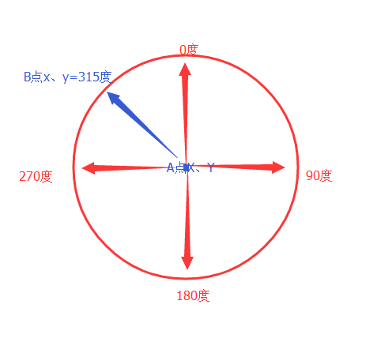

| 命令名称 | AngleCalc 角度计算 |
| 命令功能 | 角度计算，指北为0度 |
| 语法格式 | Angle = TURING.AngleCalc(aX, aY, bX, bY) |
| 参数说明 |
aX：整数型，圆心点x aY：整数型，圆心点y bX：整数型，移动点x bY：整数型，移动点y |
| 返回值 | Angle：整数型，角度（指北为0度） |
| 按键精灵 |
复制代码
aX = 100 aY = 100 bX = 150 bY = 100 TracePrint TURING.AngleCalc(aX, aY, bX, bY) |
| 角度方向 |  |